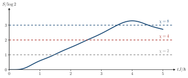

Page 8 of 12 of this session
7.8b Where MPS stop working
When does the bound (7.10) stop a matrix product state? It does so whenever the entanglement entropy of the state is larger than \(\log \chi\) for every bond dimension \(\chi\) that we can store. We will now see that this happens after a quench, in two dimensions and in highly excited states, and that in each case the bond dimension has to grow exponentially.
\[S \;\le\; \log \chi. \tag{7.10}\]
This is the bound of Section 7.8a on the entanglement entropy \(S\) that an MPS of bond dimension \(\chi\) can hold across one bond. It comes from the Schmidt decomposition at that bond, which has at most \(\chi\) terms, and only \(\chi\) equal Schmidt weights reach it.
The bound tells us directly where MPS must fail, which is whenever the true entanglement entropy is larger than what a practical bond dimension can give through (7.10). In practice this happens in four cases. The first case is dynamics over long times, since after a quench the entanglement grows linearly with time and not logarithmically, as Schematic 7.11 shows for a small chain. The second case is systems in more than one dimension. There the length of the boundary in the area law grows with the system size, as we saw in Section 7.7. So \(\chi\) has to grow too, often exponentially in the linear size of the subsystem. The third case is highly excited states, since the area law is a statement about ground states and not about general eigenstates. The fourth case is, more generally, states far from equilibrium.
However, when the physics stays close to a gapped 1D ground state, MPS can be used for more than the ground-state problem. With a higher cost, they can be used for time evolution, excited states and open quantum systems, routinely in 1D and in some cases in 2D.
An MPS that holds the entanglement entropy \(S\) across a cut needs at least the bond dimension
\[\chi \ge e^{S}.\]
This is (7.10) read backwards. An entropy that grows linearly in time after a quench, or linearly with the width of a strip in two dimensions, needs a \(\chi\) that grows exponentially.
The steps From the bound (7.10) to the cost of a quench and of a strip
The bound (7.10) is \(S\le\log \chi\), so an MPS that holds the entropy \(S\) needs \(\chi\ge e^{S}\). Let us take first the simplest case, a cut that crosses \(n\) singlets. Each singlet gives \(\log 2\), so \(S=n\log 2\) and
\[\chi\ge e^{n\log 2}=2^{n}.\]
After a quench the entropy of half of the chain grows about linearly, \(S(t)\approx vt\), until the finite length of the chain stops the growth. The bound then gives
\[\chi\ge e^{vt},\]
meaning that \(\chi\) grows exponentially with the time that we want to reach. In the quench of Schematic 7.11 the entropy passes \(\log 2\), \(\log 4\) and \(\log 8\) at \(t\approx1.5\), \(2.5\) and \(3.5\) in units of \(\hbar/J\), so the bond dimension that it needs roughly doubles at each unit of time.
For a strip of width \(W\), the MPS runs along the strip and each of its cuts crosses the strip. If each row adds the same entropy \(s\) to the cut, then \(S=sW\) and
\[\chi\ge e^{sW}.\]
A gapped ground state has a fixed \(s\), so \(\chi\) grows exponentially with the width \(W\), while the length of the strip only adds tensors.


We change the Hamiltonian of a chain suddenly, which is called a quench. After the quench the entropy of half of the chain grows linearly in time,
\[S(t)\propto t.\]
An MPS of bond dimension \(\chi\) holds at most
\[S\le\log \chi.\]
Why is this growth a problem for an MPS with a fixed \(\chi\)?
Show the answers
- A. ✗ False
This is false. The evolution with a Hamiltonian is unitary, so \(\langle\psi|\psi\rangle=1\) at all times. The norm is not what grows after a quench.
- B. ✗ False
This is false. A quench only changes the parameters. For example \(J=1\) becomes \(J=2\) and the Hamiltonian is still a sum of nearest-neighbor terms.
- C. ✓ True
This is true. The bound \(S\le\log \chi\) needs \(\chi\ge e^{S}\), and a linear growth of \(S\) makes this \(\chi\) grow exponentially. For this reason long-time dynamics is hard for MPS.
The half-chain entropy after a quench passes each limit \(\log \chi\) at a finite time.
Which ground state is the hardest for an MPS with a fixed bond dimension?
Show the answers
- A. ✗ False
This is false. The AKLT chain is gapped and its exact ground state is an MPS with \(\chi=2\), for 100 sites or for 10000. The entropy of a gapped chain saturates.
- B. ✓ True
This is true. An MPS has to pass through the lattice, and its cut through the middle crosses ten bonds. The entropy is then roughly ten times the one of a single bond, and the bond dimension that it needs is exponentially larger.
- C. ✗ False
This is false. A product of dimers has a cut that crosses at most one singlet, with entropy \(\log2\) at most. It is an exact MPS with \(\chi=2\).
A gapped model lives on a strip of width \(W\). An MPS runs along the strip, and each of its cuts crosses \(W\) singlets. Find the smallest bond dimension \(\chi\), and the number \(2\chi^2\) of complex numbers of one bulk tensor, for \(W=10\) and for \(W=20\).
Solution
Each cut singlet gives \(\log 2\), so the entropy at a cut is \(S=W\log 2\). The bound (7.10) asks for \(\log \chi\ge W\log 2\), so the smallest bond dimension is \(\chi=2^W\). For \(W=10\) this is \(\chi=2^{10}=1024\), and one bulk tensor has \(2\chi^2=2.1\times10^6\) numbers. For \(W=20\) it is \(\chi=2^{20}\approx10^6\), and one bulk tensor has \(2.2\times10^{12}\) numbers, which is \(35\) TB with 16 bytes per number.
The strip is only twice as wide, but one tensor is about \(10^6\) times larger. This is why DMRG in two dimensions is used on narrow strips, while for a chain the cost grows only linearly with the length.
Notebook check-in: session7.ipynb, “Entanglement entropy of the ground state” (Core), “Size dependence of the entanglement entropy” (Challenge), and “Bond dimension dependence of the entanglement entropy” (Challenge)
With these three exercises you can reproduce Sections 7.5 to 7.8 numerically. First, you compute the entanglement entropy at each bond for the MPS ground state of a Heisenberg chain. Then you check that it grows very little with the system size. This is not the area-law saturation of Section 7.6, since the Heisenberg chain is gapless and its entropy grows as \(\frac c6\ln L\) with \(c=1\), as the notebook writes. Finally, you check that it saturates with the bond dimension once the Schmidt weights that \(\chi\) drops are negligible, which is well above the smallest \(\chi\) that (7.10) allows. The quiz of the first exercise also asks you to replace the model with an Ising model and to see how the entropy changes. This is a quick way to see how the area law responds to a really different ground state, which in this case is classical and has zero entanglement.
Try it. Compare the curves of \(L=10\) and \(L=30\) as a function of maxm. Both curves stay far below the bound \(\ln\chi\) for \(\chi\ge2\). Which chain needs the larger bond dimension before its entropy saturates, and why?